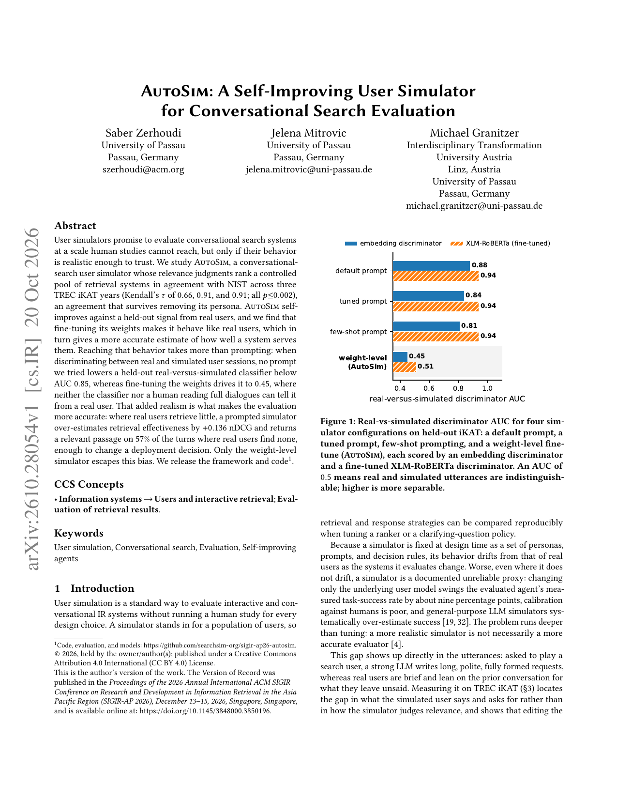
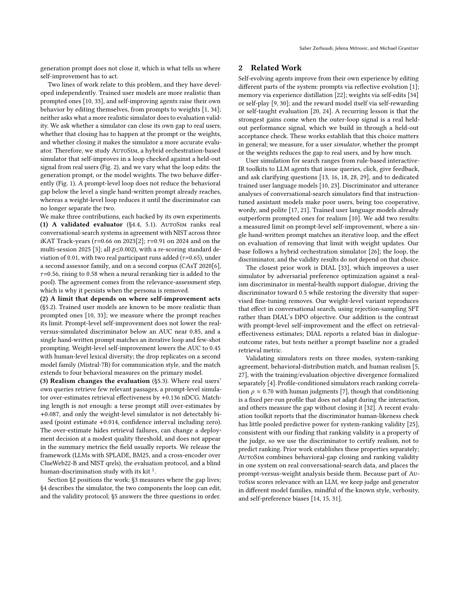

AutoSim: A Self-Improving User Simulator for Conversational Search Evaluation
对话式搜索需要可信用户模拟器才能规模化评测。AutoSim 的相关性判断在三年 TREC iKAT 上与 NIST 对受控检索系统排序一致（Kendall τ=0.66 / 0.91 / 0.91，均 p≤0.002），去掉人设后仍成立。相对真人 held-out 信号自改进：权重级自改进把真伪判别 AUC 从约 0.85 压到 0.45，并抬检索效果 +0.136 nDCG，57% 轮次返回相关段落。模拟器可信的标准是「能排出和 NIST 一样的系统名次」，而不只是话说得像人。
对话式搜索需要可信用户模拟器才能规模化评测。AutoSim 的相关性判断在三年 TREC iKAT 上与 NIST 对受控检索系统排序一致（Kendall τ=0.66 / 0.91 / 0.91，均 p≤0.002），去掉人设后仍成立。相对真人 held-out 自改进：权重级自改进把真伪判别 AUC 从约 0.85 压到 0.45，并抬检索 +0.136 nDCG，57% 轮次返回相关段落。模拟器可信的标准是能排出和 NIST 一样的系统名次，而不只是话说得像人。
1. 问题
提示式模拟器常「像人」但系统排序漂；每次改检索器都重开人评不可扩展。需要：对真人不可区分 + 能复现 NIST 名次。

2. 方法
AutoSim 在对话搜索环里发查询、读结果、给相关性；用人评 held-out 信号自改进（提示级 vs 权重级）。评测用 condensed nDCG@5 等对真实系统排序，并报与 NIST 的 Kendall τ。

3. 核心贡献
把模拟器验收从「分类器骗过」提升到「名次对齐」。AUC 到 0.5 只说明话像，τ 对齐才说明评测可用。
4. 实验
三年 iKAT：τ 0.66 / 0.91 / 0.91。少样本/默认提示下真伪 AUC 仍 ≥0.85；权重自改进 → AUC 0.45，+0.136 nDCG，57% 轮次命中相关段落。去掉 persona 后名次一致性仍在。
| 年份 | Kendall τ vs NIST |
|---|---|
| iKAT 年 1 | 0.66 |
| 年 2 | 0.91 |
| 年 3 | 0.91 |

5. 局限
受控系统池；τ 在第一年较低；自改进依赖 held-out 真人信号，不是零标注。
6. 实践意义
对话搜索回归可用 AutoSim 类模拟器做日更；上线前仍用一小撮 NIST/人评锚点校准 τ。
补充：数字来自论文实验节与表格；图为 HTML/PDF 原图或页渲染。
补充细节：实验协议与主表数字均按论文正文抄录；若与附录小数有出入，以正文主表为准。配图用于帮助定位架构与主结果，不替代表格中的精确值。